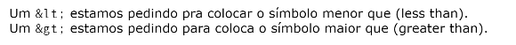
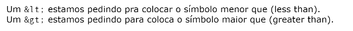

Códigos bases
H1 é o cabeçalho primario, seguido de H2, H3, H4, H5 e H6
HR é uma linha horizontal
P é o conteúdo do site
para fazer um paragráfo ou uma quebra de texto usa-se o BR. Exemplo a seguir:
te amo minduin,
trequinho,
panqueca
para adicionar comentários dentro do visual studio é usado a tag <!--
para modificar mais de uma tag de uma vez basta clicar e segurar alt e ir clicando nas tags que deseja alterar
Colocando símbolos no texto
Para adicionar emoji se usa &#x, exemplo: 💞
 

Inserindo imagens
Para inserir uma imagem basta adicionar img. Também é possível adicionar uma imagem direto da URL da imagem, basta adicionar o endereço do link da imagem dentro do src. Exemplo

FAVICON
Para adicionar o favicon basta ir no cabeçalho e adicionar o link:favicon, em seguida apague o favicon.icon e clique em control + espaço.
Negrito ou destaque
Para adicionar o negrito basta usar a tag B forma não semântica
Outra forma de adicionar o destaque é com a tag STRONG forma semântica
Itálico ou ênfase
Para adicionar o itálico basta utilizar a tag I forma não semântica
Utiliza-se também a tag EM forma semântica
Texto marcado
Podemos criar um texto marcado utilizando a tag MARK. Exemplo: amo gatinhos, para dar outra cor a tag basta adicionar após o primeiro marcador a tag style=background-color
Tamanho de texto
A tag big não funciona mais na HTML, somente a tag small, pois o tamanho grande é um estilo e pode ser acrescentada nas CSS, porém a forma em minúsculo pode ser usada para observações na formatação de texto. Exemplo: Leia as letras pequenas do contrato amo você duardin
Texto deletado
Podemos marcar um texto como excluído para indicar que deve ser lido, porém não deve ser considerado. Para isso usamos a tag del. Exemplo: quiero recordar que la vida es un sueno
Texto inserido
Podemos marcar o texto como inserido para dar ênfase e indicar que foi inserido depois usando a tag ins . Exemplo: eres pergunta e respuesta, mi euforia ...
Texto sobrescrito
Para inserir coisas do tipo x10-1 usa-se a tag sup
Texto subscrito
Para inserir coisas do tipo H2O usa-se a tag sub
Código-fonte
Fonte monoespaçada: o comando document.getElementById é escrito em liguagem Java-Scrit, porém a formação do texto não possui uma fonte monoespaçada, usando a tag CODE o texto fica em espaçamento igual. Exemplo: document.getElementById
Espaçamento e organização de códigos: basta utilizar a tag pre que o espaçamento do visual studio começa a contar. Exemplo de organização de código:
num = int(input('Digite um número'))
if num % 2 == 0:
print(f'0 número {num} é PAR)
else:
print(f'0 número {num} é ÍMPAR)
print('Fim do programa')
Citação
É possível efetuar uma formatação simples adicionando a tag Q, exemplo: como dizia minha mãe bebada quero minha mãe.
Para se utilizar uma citação maior se utiliza blockquote, exemplo
você pode
não ter deixado
(muitas) manchas roxas
na minha pele,
mas deixou manchas
roxas escuras gigantes
por toda
minha alma.
É possível também adicionar um link para que o google saiba que aquela citação pertence a algum livro, basta colocar blockquote cite
Abreviação
É possível colocar uma tag que quando o usuário passe o mouse por cima da abreviação seja possível visualizar o significado, basta usar abbr. Exemplo: CSS e HTML
LISTAS
Lista ordenada
Para ordenar uma lista se usa ol, e para organizar a lista em número se usa dentro da tag ol a tag li. Exemplo:
- Acordar
- Estudar
- Almoçar
para adicionar o tipo de ordenação de texto basta colocar ol type e selecionar a opção desejada, desejando que a lista se iniciei em outro número ou letra basta adicionar start e colocar o número/letra desejado. Exemplo:
- Acordar
- Estudar
- Almoçar
Lista não ordenadas
Para fazer uma lista basta colocar ul, exemplo:
Para modificar o tipo basta colocar o type, existem 3 opções de lista, circle, disc e square. Exemplo:
Mesclagem de lista
É possível mesclar lista de OL e UL, basta adicionar uma tag dentro da outra.
- Estudar
- Estudar
- Estudar
Lista de definição
para definir um termo basta usar as tag DT= TERMO e DD= definição, segue exemplo:
cubo mágico: é um jogo tridimensional composto de 6 faces de cores diferentes divididas cada uma em 9 partes de tamanhos iguais
TABELAS EM HTML
- Hierarquia de tabela simples: table, table row, table header, table data
- table: serve para delimitar o tamanho da tabela.
- tr (table row): linhas da tabela
- td (table data): dados da tabela
- th (table head): titulo da tabela
- Hierarquia de tabelas grandes:TABLE, CAPTION THEAD, TBODY, TFOOT. obs: Dentro de THEAD, TBODY, TFOOT é possível ter tr, td e th.
- caption: legenda da tabela.
- thead:cabeçalho da tabela.
- tbody: corpo da tabela.
- tfoot: rodapé da tabela.
Escopo de titulo em tabelas
É utilizado para facilitar os mecanismos de busca do google, adicionado na frente da tag th. Segue exemplo
<th scope= "col" > (se os dados da tabela estiverem abaixo) <th >
<th scope= "row" > (se os dados estiverem a frente)<th >
<th scope= "colgroup"> (se os dados estiverem abaixo e em mais de uma coluna.)
<th scope= "rowgroup"> (se os dados estiverem a frente e em mais de uma linha.)
Efeito zebrado em tabelas com HTML e CSS
Cabeçalho fixo em tabelas grandes
Agrupando Colunas com colgroup
- Para estilizar uma tabela por linha basta colocar a tag class em "tr". Porém para persolizar uma coluna basta utilizar a tag colgroup, adicionar quantas colunas possui a tabela e adicionar as class dentro da tag, segue exemplo:
<table>
<colgroup>
<col class="ex1">
<col class="ex2">
<col class="ex3">
<colgroup>
<thead>
<tr>
<tr>
<thead>
<table>
Tabelas responsivas
- Para adicionar responsividade na barra lateral basta adicionar a tabela inetira dentro da tag div id container Na CSS adicione overflow-x